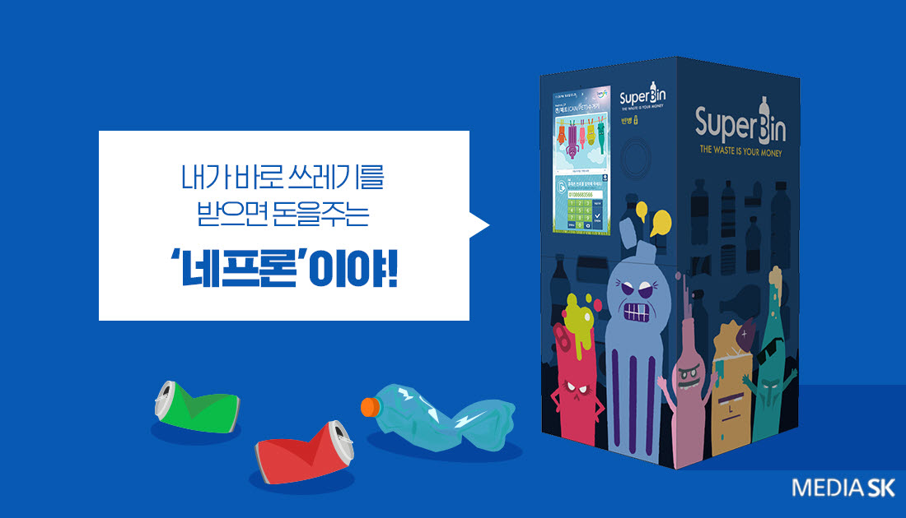

네프론 은 재활용 쓰레기 문제에 새로운 대안을 제시하는 스타트업, '수퍼빈' 이 개발한 인공지능 순환자원 회수 로봇이다.
네프론은 현재 서울시, 경기도, 충청남도, 경상북도, 전라남도, 제주도 등 전국 75곳에 설치되어 있으며, 네프론이 설치된 곳에서는 주민들이 재활용에 적극 참여하고 있다.
김정빈 수퍼빈 대표는 "쓰레기도 가치가 있다는 인식을 확산하는게 우리 회사의 1차 목표"라고 말했다.
네프론이 주변에서 보인다면 꼭 이용해보는건 어떨까?